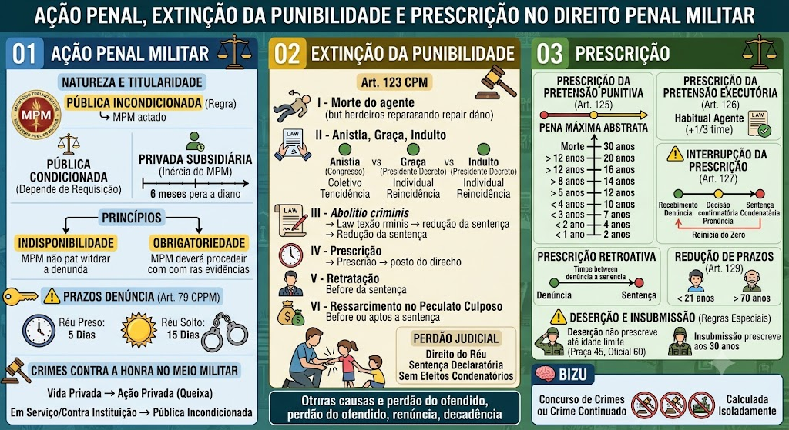

Material de estudo: Ação Penal, Extinção da Punibilidade e Prescrição
Material complementar · Ver fonte no GitHub
Ação Penal Militar
Natureza e Titularidade
Pública incondicionada – regra: Ministério Público Militar (MPM) age de ofício.
Pública condicionada – exceção: depende de requisição (ex.: crimes contra a honra de autoridade).
Privada subsidiária da pública – se o MPM ficar inerte, o ofendido pode oferecer queixa‑crime no prazo de 6 meses contados do esgotamento do prazo para denúncia.
Princípios
Indisponibilidade: o MPM não pode desistir da ação.
Obrigatoriedade: havendo indícios suficientes, o MPM deve processar.
Prazos para Denúncia (Art. 79 do CPPM)
Réu preso: 5 dias.
Réu solto: 15 dias.
Contados do recebimento dos autos pelo MPM. O atraso não extingue a punibilidade, mas pode levar ao relaxamento da prisão.
Crimes contra a Honra no Meio Militar
Entre militares na vida privada → ação privada (queixa).
Contra militar em serviço ou contra a instituição → pública incondicionada.
Extinção da Punibilidade
Causas Extintivas (Art. 123 do CPM)
I – Morte do agente: extingue a punibilidade, mas a obrigação de reparar o dano subsiste contra os herdeiros.
II – Anistia, Graça ou Indulto:
- Anistia: concedida pelo Congresso (lei), alcance coletivo, apaga a reincidência, pode ser concedida antes ou depois da condenação.
- Graça: concedida pelo Presidente (decreto), individual, mantém a reincidência, apenas após condenação.
- Indulto: concedido pelo Presidente (decreto), coletivo, mantém a reincidência, apenas após condenação.
III – Abolitio criminis: lei nova deixa de considerar o fato como crime – retroage, apaga os efeitos penais, mas mantém a obrigação de indenizar.
IV – Prescrição: perda do direito de punir pelo decurso do tempo (ver tópico seguinte).
V – Retratação do agente: nos casos em que a lei a admite (ex.: crimes contra a honra). Extingue a punibilidade se realizada antes da sentença.
VI – Ressarcimento no peculato culposo: se o agente devolver o dinheiro antes da sentença, a punibilidade se extingue; após a sentença, apenas reduz a pena (1/3 a 2/3).
Outras causas (perdão judicial, perdão do ofendido, renúncia, decadência) também estão previstas no mesmo artigo.
Perdão Judicial
Hipótese legal específica (ex.: homicídio culposo com sofrimento extremo do autor, como pai que mata o filho sem querer).
É um direito do réu – o juiz deve conceder se preenchidos os requisitos.
Sentença declaratória da extinção da punibilidade, sem efeitos condenatórios (Súmula 18 do STJ).
Prescrição
Prescrição da Pretensão Punitiva (Art. 125 do CPM)
Calculada pela pena máxima abstratamente cominada ao crime.
Prazos:
- Pena de morte (guerra): 30 anos
- Superior a 12 anos: 20 anos
- Superior a 8 e até 12 anos: 16 anos
- Superior a 4 e até 8 anos: 12 anos
- Até 4 anos: 8 anos
- Até 2 anos: 4 anos
- Até 1 ano: 2 anos
Prescrição da Pretensão Executória (Art. 126 do CPM)
Calculada pela pena concretamente aplicada na sentença.
Se o agente for habitual, o prazo aumenta em 1/3 (§ 1º).
Interrupção da Prescrição (Art. 127 do CPM)
Marcos interruptivos (reiniciam a contagem do zero):
1. Recebimento da denúncia.
2. Pronúncia (em crimes afiançáveis).
3. Decisão confirmatória da pronúncia.
4. Sentença condenatória.
Prescrição Retroativa
Ocorre quando a pena aplicada na sentença é menor que a pena‑base, e o tempo decorrido entre a denúncia e a sentença já ultrapassa o prazo correspondente à pena concreta.
Redução de Prazos (Art. 129 do CPM)
Metade dos prazos se o agente, ao tempo do fato, tiver menos de 21 anos ou, ao tempo da sentença, tiver mais de 70 anos.
Deserção – Regra Especial (Art. 132 do CPM)
O crime de deserção não prescreve enquanto o militar não atingir a idade limite do serviço:
- Praça: 45 anos.
- Oficial: 60 anos.
Insubmissão: a prescrição inicia quando o agente completa 30 anos.
Concurso de crimes ou crime continuado
A prescrição é calculada para cada crime isoladamente.
Mapa-mental
